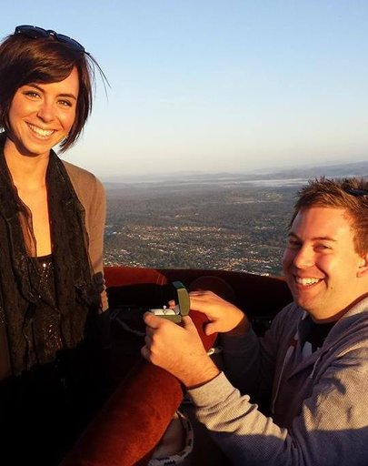

Robyn and David Kerr along with Kate and David Gross invite you to celebrate the marriage of
Rikki Nara Kerr and Clive James Gross
4 April, 2015 -
About Us
Rikki Kerr
Some of Rikki's hobbies include, cooking, baking, horseriding gardening, learning to embroider oh and watching terrible love shows on TV. She dislikes cleaning. Rikki and Clive have a pet Blue Tongue Lizard named Leto. Rikki very much dislikes her and still hasn't touched her after 1 year. Rikki loves Clive, Clive loves that stupid lizard, therefore she has to love it but definately will not touch it.
Clive Gross
Clive is a hero of all three Dragon Wars. He rose to fame after single-handedly slaying Raziel the Ferocious, the greatest dragon that ever lived, and bringing peace to all the lands. He now spends his days working as an automation and controls engineer and enjoys tinkering and hacking away at software and automation projects in his spare time. He loves Leto but loves Rikki more.
How we met
At a pool. Rikki hit on Clive first!
The proposal
On 20th December, 2013, Clive invited Rikki on a surprise road trip at 3.30am. Little did he know that she had been doing her research and had narrowed down such an early departure to only a few things. When they arrived at a hotel in Ipswich, with a hot air balloon basket out the front, her suspicions were confirmed. On a beautiful cloudless morning, shortly after takeoff, Clive asked her to take a photo. As Rikki bent down to her bag, a fluttery sensation came over her. Returning to stand, she found Clive on one knee presenting a shining ring. He popped the question and Rikki said yes.
Details
The wedding will be held on the 4th April, 2015, at Obi Obi and Kidaman Creek Hall, Obi Obi, in the Sunshine Coast Hinterland region of Queensland. See the Venue section for venue-specific details. Guests are encouraged to seek accommodation in Mapleton and the surrounding townships. See the Accommodation section for more information.
As the wedding will be occurring over the Easter long weekend, we are hoping to make a holiday out of it with all of you. For guests arriving on Friday, there will be an evening barbeque in Mapleton. Likewise, there will be a brunch on Sunday morning. See below for details.
A schedule for the weekend has been provided below:
Friday, 3rd April 2015
- BBQ dinner
- Location: Mapleton Falls Luxury Accommodation, Mapleton.
- Time: 5.30pm-9.00pm
- Dress: Smart casual.
Saturday, 4th April 2015
- Wedding ceremony and reception
- Location: Obi Obi and Kidaman Creek Hall, Obi Obi.
- Times:
- 2.30pm: Coach pickup for guests (see Transport section for details).
- 3.30pm: Ceremony commences.
- 5.30pm: Reception commences.
- 10.30pm-11:30pm: Coaches return guests to accommodation via dropoff points.
- Dress: Cocktail.
Sunday, 5th April 2015
- Brunch
- Location: Boorman Eco Lodge, Mapleton.
- Time: 10.30am-1.00pm
- Dress: Smart casual.
The Venue
Obi Obi and Kidaman Creek Hall is about 10 minutes from the towns of Mapleton and Kenilworth. It has had an interesting history since its inception in the 1960s. See the map below for the location and proximity to surrounding towns.
For those who wish to drive to the venue rather than take one of the organised buses, there are 50 off-road parks available.
Accommodation
Below are some links to websites for accommodation in Mapleton, Flaxton and Kenilworth:
Transport
There will be a coach service provided to transport guests to and from the venue. At this stage, we intend to have pickup points in the town centres of Mapleton, Flaxton and possibly Kenilworth and Montville, depending on the distribution of guests requiring transport.
Please nominate whether or not you will be requiring the coach service and in what town you are residing when you RSVP.
For those wishing to drive, please be aware that the route from most of the surrounding towns to the Hall is down a steep gorge. The road is unsealed and unlit, traverse it at your own peril.
Things To Do
- Get familiar with the beaches and hinterland of the region via Visit Sunshine Coast website.
- Check out the famous Eumundi Markets on Saturday morning.
Wishing Well
We appreciate that many guests are travelling far and wide to celebrate with us, which is a gift in itself. If guests would like to make a contribution to our future, there will be a wishing well at the reception.
Contact and RSVP
RSVP by 8 February 2015 to clikki.wedding@gmail.com. Please let us know of any dietary requirements, whether you will be attending the Friday BBQ and/or Sunday brunch and whether you require the coach service. If using the coach service, please tell us where you are located.
For more information, email us at clikki.wedding@gmail.com or call us at:
- Rikki: +61 421 848 561
- Clive: +61 421 495 712